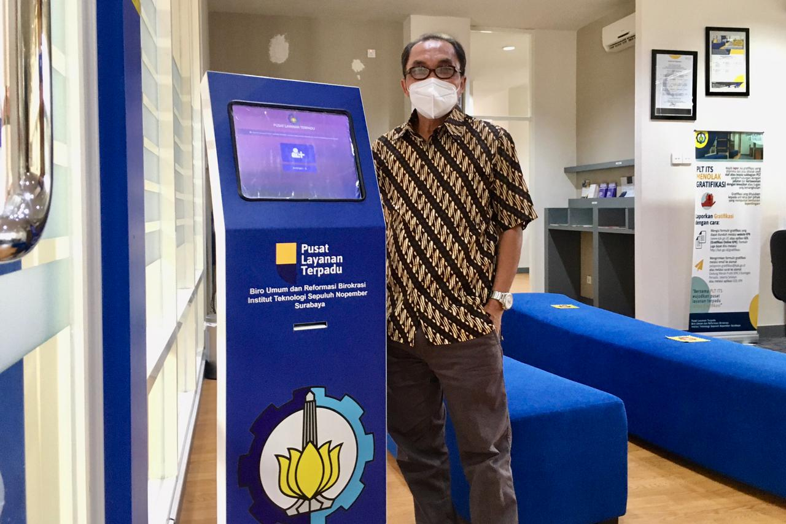

ITS Campus, ITS News - Although it was only officially established in June 2020, the Integrated Service Center (PLT) of Institut Teknologi Sepuluh Nopember (ITS) managed to make extraordinary achievements. This is shown by the success of ITS in getting the 3rd best ranking from all institutions under the Ministry of Education, Culture, Research, and Technology (Kemendikbudristek) and the top rank among universities (PT) in monitoring and evaluating public services.
According to the head of the ITS Bureau of General Affairs and Bureaucratic Reform (BURB), Drs Ec Murtriyono MSi, the purpose of the monitoring and evaluation (monev) carried out by the Ministry of Education and Culture is to assess the performance of public service delivery units. This assessment is adjusted to the existing instruments in PERMENPAN RB Number 17 of 2017.
Murtriyono continued, there are six aspects to consider in the assessment of public services carried out. These include Service Policy, Human Resources Professionalism in Service Units, Facilities and Infrastructure, Public Service Information Systems, Consultation, and Complaint Management, and Innovation Creation. “This innovation concerns how the public service implementing unit can continue to provide satisfaction to service users," he explained.
Kepala Biro Umum dan Reformasi Birokrasi ITS Drs Ec Murtriyono MSiHead of ITS Bureau of General Affairs and Bureaucratic Reform Drs Ec Murtriyono MSiIn the ranking which was inaugurated at the end of March, ITS managed to achieve a final score of 4.14 out of a scale of 5 with the title Very Good. This has succeeded in bringing ITS to third place after the Institute for the Development of Early Childhood Education and Community Education (BP PAUD Dikmas) NTB, and the Higher Education Service Institute (LLDIKTI) Region VI.
There are three stages of monitoring carried out by the Ministry of Education and Culture in this ranking. In the first stage, the public service unit of each institution conducts an independent assessment through an evaluation form provided by the assessment team. Then a direct assessment by the Ministry of Education and Technology is carried out, and at the last stage, a survey is carried out of service users. "At ITS itself, the majority of service users are alumni," explained Murtriyono.
In the last two years, Murtriyono revealed that PLT ITS has served more than 5,000 alumni in fulfilling various administrative needs, such as legalizing diplomas, and transcripts, checking the validity of diplomas, to document translation for study abroad purposes. "Currently, all services are done online and in a very short time," he added.

ITS Integrated Service Headquarters is ready to serve various information and other needs related to ITS
Not only related to administrative aspects, but PLT ITS is also very concerned about various service facilities such as adequate parking spaces, to toilets that are specially provided for the disabled. "We continue to be committed to providing services that are cheap, easy to reach, fast, and can provide satisfaction to service users," explained the Head of the ITS Bureaucratic Reform Implementation Section, Ir Ucik Maharani MT.
Ucik added that in the future the services provided by PLT ITS will be integrated into one MyITS Service platform which will be socialized this April. As a technology-based campus, of course, an integrated system innovation will be an advantage that can help the various needs of service users with an easier and faster process. “We also hope that MyITS Service will become an integrated service center in ITS internal, including serving students," he concluded. (ITS Public Relations)
Reporter: Fathia Rahmanisa
Headline English